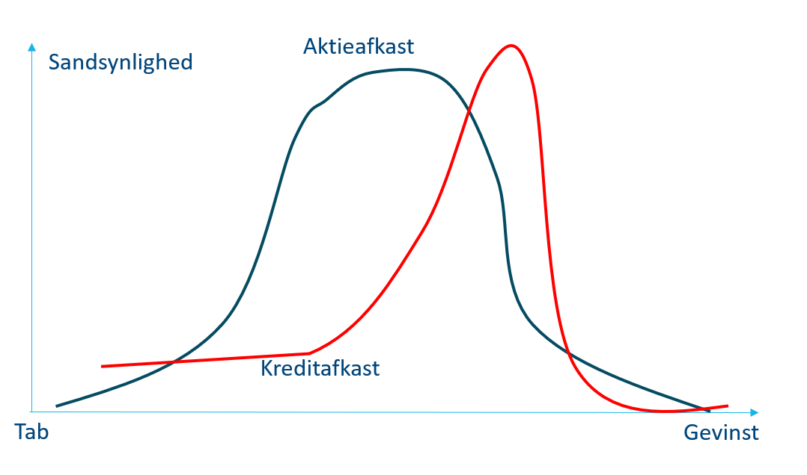
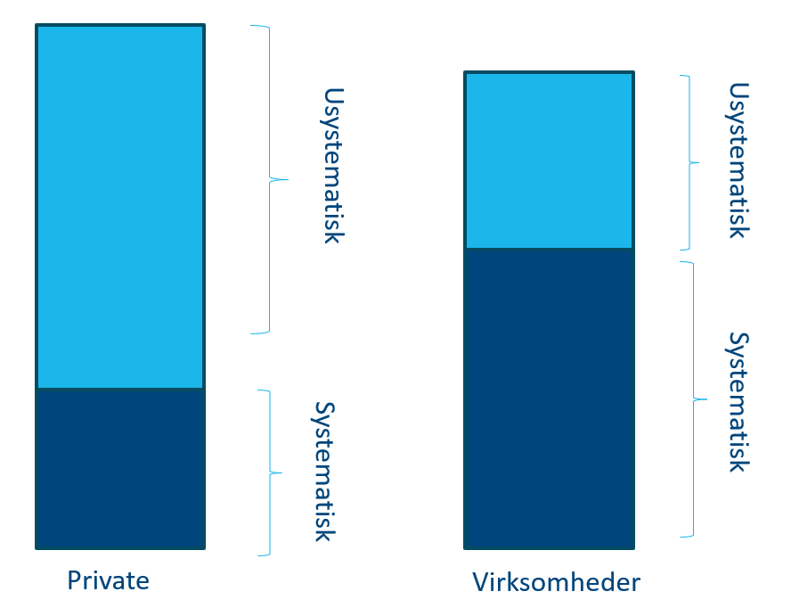
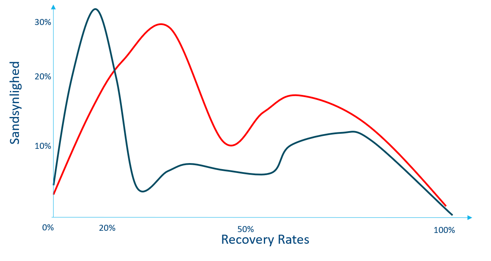
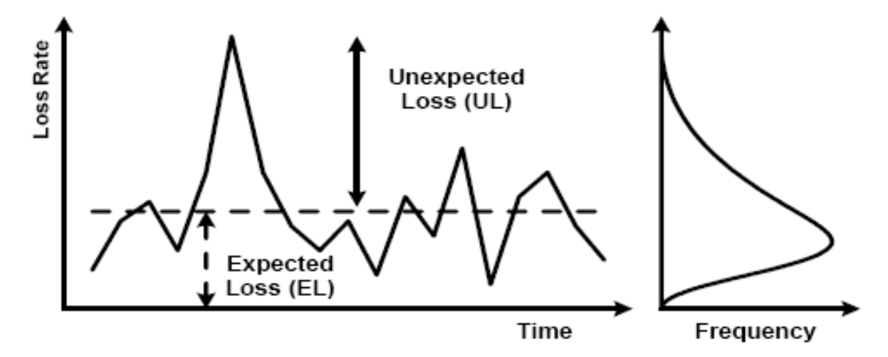
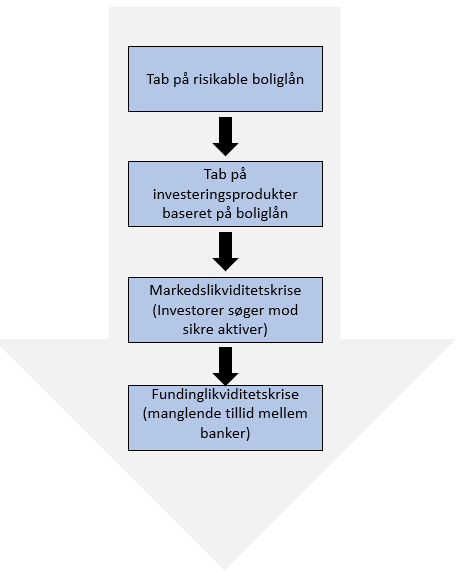

Pengeinstitutters risikostyring
Kreditrisiko, likviditetsrisiko, kapital og regulering
Pengeinstitutters risikostyring
Ramme
- Banker skal tage risici — pointen er bevidst og prissat risikotagning
- Fokus her: kreditrisiko og likviditetsrisiko (markeds- og operationel risiko udelades)
- Bankens rolle: allokere kapital og fungere som løbetidstransformator
- Lærdom fra 2008 og 2023: tillid og tabsabsorbering (kapital/likviditet) er centrale
Læringsmål
- Forklare og skelne mellem kredit- og likviditetsrisiko
- Forstå systematisk vs. usystematisk kreditrisiko og porteføljeimplikationer
- Anvende PD–LGD–EAD; beregne EL og UL (via WCDR)
- Tolke eksterne ratings og RWA/kapitalkrav (standardmetoden) + kapitalhierarki (CET1/AT1/Tier2)
- Forklare LCR og NSFR, HQLA-niveauer samt praktiske LCR-eksempler
- Beregne en simpel likviditetspræmie fra bid–ask og drøfte funding-/markedslikviditet
Kreditrisiko: hvad og hvorfor?
Definition og payoff
- Risiko for misligholdelse (helt/delvist) → tab på udlån, garantier, lande m.m.
- Største risikotype i banker/realkredit → kræver modeller, processer, governance
- I pensionskasser dominerer ofte markedsrisiko (mange investeringer, ingen udlån)
- Typisk: kunden betaler → banken tjener kredittillæg (moderat gevinst)
- Ved default: tab af renter + (dele af) hovedstol → skæv fordeling

Systematisk vs. usystematisk kreditrisiko
Begreber og porteføljeimplikation
- Systematisk: makrostød (recession) rammer bredt — svær at diversificere
- Usystematisk: kundespecifik (ledelse, jobtab) — kan spredes væk
- Erhverv typisk mere konjunkturfølsomt end husholdninger
- Banker bruger ratings/PD-klasser til styring og prissætning

PD – ratingklasser og anvendelser
Probability of Default (årlig)
- Bankerne estimerer PD på tværs af segmenter og grupperer i ratingklasser
- PD bruges til kreditvurdering, kapitalstyring (regulatorisk/økonomisk) og prissætning
| Probability of Default | Original eksponering | Off-balance eksponering | CCF | Gns. PD | Gns. LGD | Gns. løbetid (år) |
|---|---|---|---|---|---|---|
| 0,00 til < 0,15 | 45.059 | 34.008 | 50% | 0,04% | 29,30% | 2,2 |
| 0,15 til < 0,25 | 15.653 | 13.986 | 48% | 0,22% | 26,80% | 2,3 |
| 0,25 til < 0,50 | 36.589 | 13.556 | 48% | 0,44% | 26,80% | 2,2 |
| 0,50 til < 0,75 | 10 | 10 | 57% | 0,56% | 32,50% | 2,5 |
| 0,75 til < 2,50 | 15.684 | 7.091 | 49% | 1,06% | 26,60% | 2,3 |
| 2,50 til < 10,00 | 1.146 | 445 | 50% | 4,10% | 25,60% | 2,5 |
| 10,00 til < 100 | 1.958 | 895 | 51% | 9,86% | 29,60% | 2,7 |
| 100 (Default) | 1.133 | 244 | 0% | 100,00% | 29,00% | 2,3 |
| Total | 116.844 | 66.401 | 49% | 1,51% | 28,10% | 2,3 |
Kredittillæg (intuition)
- Simpelt mål:
\[ s \;=\; \mathrm{PD}\cdot(1-R), \] hvor \(R\) er recovery rate.
Eksempler: kredittillæg (PD & Recovery)
Cases
Eksempel 1: Dårlig kunde
- PD \(=15\%\), \(R=20\%\)
\[
s \;=\; 0{,}15\cdot(1-0{,}20) \;=\; 0{,}12 \;\Rightarrow\; 12\%
\]
Eksempel 2: God kunde
- PD \(=1\%\), \(R=70\%\)
\[
s \;=\; 0{,}01\cdot(1-0{,}70) \;=\; 0{,}003 \;\Rightarrow\; 0{,}3\%
\]
LGD og Recovery Rate
Begreber
- LGD: forventet tab (pct.) ved default
- Recovery: andel ikke tabt, $ = 1- $
- Afhænger af sikkerheder, likviditet og konjunktur

EAD – Exposure at Default
Definition og praksis
- Forventet eksponering ved misligholdelse
- Inkluderer udestående + forventet træk på off-balance faciliteter
- Modelleres med konverteringsfaktorer (CF/CCF) afhængig af adfærd, facilitet og konjunktur
EL og UL – samt WCDR
Historik og formler
- Kapital sigtes mod sjældne, hårde år (fx 99,9% på 1 år)
- Brug WCDR (worst-case default rate) til UL-dimensionering
- Forventet tab (EL)
\[ \mathrm{EL}=\mathrm{PD}\cdot\mathrm{LGD}\cdot\mathrm{EAD} \] - Uforudset tab (UL)
\[ \mathrm{UL}=(\mathrm{WCDR}-\mathrm{PD})\cdot\mathrm{LGD}\cdot\mathrm{EAD} \]
WCDR-tabeller og figur
| Kreditrating | 1 år | 3 år | 5 år | 7 år |
|---|---|---|---|---|
| AAA | 0,0% | 0,0% | 0,0% | 0,1% |
| AA | 0,0% | 0,0% | 0,4% | 0,7% |
| A | 0,0% | 0,5% | 1,0% | 2,0% |
| BBB | 0,5% | 2,5% | 3,6% | 4,5% |
| BB | 2,8% | 8,0% | 13,5% | 16,5% |
| B | 7,0% | 16,6% | 20,5% | 26,6% |

Eksempel: beregn UL (WCDR)
Opsætning og beregning
- Udlån 100 mio. → EAD = 130 mio.
- PD \(=2\%\), WCDR \(=10\%\), Recovery \(=40\%\) → LGD \(=60\%\)
\[ \mathrm{UL}=(10\%-2\%)\cdot 60\%\cdot 130 = 0{,}08\cdot 0{,}60\cdot 130 = 6{,}24\ \text{mio. kr.} \]
Tolkning: Banken bør holde ~6,24 mio. kr. i kapital til uforudsete tab i et hårdt år.
Eksterne ratings: oversigt og brug
Rolle og kritik
- Bruges til investeringer og under standardmetoden (RWA)
- Skelnen: Investment grade (BBB/Baa+) vs. Speculative (BB/Ba og lavere)
- “Through-the-Cycle” praksis → undgå konstante ratinghop
- Cliff risk, modeltillid, udsteder-betaler, uklar ansvarlighed (post-2008)
Ratingkort
| Moody’s | S&P | Fitch | Betydning | |
|---|---|---|---|---|
| Aaa | AAA | AAA | Bedste rating | |
| Aa | AA | AA | Meget høj kreditværdighed | |
| A | A | A | Øvre middel | |
| Baa | BBB | BBB | Nedre middel | |
| Ba | BB | BB | Spekulativ | |
| B | B | B | Meget spekulativ | |
| Caa | CCC | CCC | Høj default-risiko | |
| Ca | CC | CC | Ekstremt spekulativ | |
| C | C | C | Nær konkurs | |
| — | D | D | Konkurs |
Kapital og kapitalkrav (Søjler & buffere)
Arkitektur og kapitalgrundlag
- Søjle 1: min. 8% af RWA (bundplade)
- Søjle 2: institut-specifik ekstra kapital (solvensbehov)
- Søjle 3: gennemsigtighed og markedsdisciplin
- Buffere: kapitalbevaring, kontracyklisk, SIFI m.fl.
- CET1 (aktier/tilbageholdt overskud; hårdest fradrag) — rygraden
- AT1 (hybrid, kupon kan springes, write-down/konvertering) — støddæmper
- Tier 2 (efterstillet, lang løbetid) — nødnet
- Minimumsniveauer + udbytte/bonus-begrænsning ved bufferbrud
Standardmetoden: RWA og kapitalkrav
Formler og vægte
\[ \text{RWA}=\sum_i \text{EAD}_i\cdot\text{risikovægt}_i, \qquad \text{Krav}=8\%\cdot\text{RWA} \] - Ratings ⇒ risikovægte (ellers faste vægte) - EAD inkluderer off-balance via CCF
| Risikoklasse | 1 | 2 | 3 | 4 | 5 | 6 |
|---|---|---|---|---|---|---|
| Rating-eksempel | AAA–AA- | A+–A- | BBB+–BBB- | BB+–BB- | B+–B- | < B- |
| Virksomheder | 20% | 50% | 100/75% | 100% | 150% | 150% |
| Kreditinstitutter | 20% | 50/30% | 50/30% | 100% | 100% | 150% |
Eksempel (B-rating)
- B-ratet virksomhed, EAD = 30 mio., vægt 150%
\[ \text{RWA}=30\cdot 150\% = 45, \qquad \text{Krav}=45\cdot 8\% = 3{,}6\ \text{mio. kr.} \]
Likviditetsrisiko: to vinkler
Funding vs. marked
- Fundinglikviditet: kan banken skaffe kontanter til tiden?
- Markedslikviditet: kan aktiver sælges uden stort prisfald?
- Banken er løbetidstransformator: kort funding, lange aktiver

Krise-typer
- Institutspecifik: dårlig nyhed → indlånsudløb, dyr/no funding
- Systemisk: flight-to-quality; markeder lukker (ABS, efterstillet gæld)
- Selv sunde banker kan blive ramt i systemiske episoder
LCR og NSFR – intuition og formler
Definitioner
LCR (30 dage)
- Har banken nok HQLA i en 30 dages stress? \[
\text{LCR}=\frac{\text{HQLA}}{\text{netto udstrømning 30 dage}}\ \ge\ 100\%
\] - HQLA-niveauer: Level 1 (stats/CB), 2A, 2B + haircuts/lofter
NSFR (langsigtet)
- Matcher lang aktivside med stabil funding \[
\text{NSFR}=\frac{\text{ASF}}{\text{RSF}}\ \ge\ 100\%
\] - ASF vægter EK/lang funding højest; RSF vægter lange/illikvide aktiver højest
HQLA – niveauer og haircuts (forenklet)
Kategorier
| Niveau | Eksempler | Tælling i buffer |
|---|---|---|
| Level 1 | Kontanter/centralbank; stats-obl.; udvalgte særligt dækkede obl. | 100% (evt. 93% i DK-praksis) |
| Level 2A | Dækkede obl. (AA- til AA+), stærke virksomhedsobl. | ~85% |
| Level 2B | Udvalgte indeksaktier; BBB- virksomhedsobl. m.m. | 50–75% |
Bemærk: Loft for andel af Level 2 i bufferen + mindstekrav til andel bedste Level 1.
LCR – tre små cases (samme nævner)
Trin 1: Haircuts
| A | B | C | |
|---|---|---|---|
| Statsobligationer (L1) | 0 | 100 | 100 |
| Særligt dækkede (L1, 7% haircut) | \(200\times0{,}93=186\) | \(300\times0{,}93=279\) | \(200\times0{,}93=186\) |
| Level 2A (15% haircut) | \(50\times0{,}85=42{,}5\) | \(100\times0{,}85=85\) | \(50\times0{,}85=42{,}5\) |
| Sum før kvoter | 228,5 | 464,0 | 328,5 |
Trin 2: Kvoter/lofter → tilladt HQLA
| A | B | C | |
|---|---|---|---|
| Tilladt HQLA efter kvoter | 0 | 333,3 | 328,5 |
Trin 3: LCR-beregning (nævner = 250 mio.)
- \(\text{LCR}_A = 0/250 = 0\%\)
- \(\text{LCR}_B = 333{,}3/250 = 133\%\)
- \(\text{LCR}_C = 328{,}5/250 = 131\%\)
Intuition: Case A dumper (mangler de bedste Level 1). B/C består; B “spilder” buffer pga. kvoter.
Markedslikviditet: mål og ”pris for at komme ud”
Bid–ask og eksempel
- En praktisk årlig præmie for illikviditet: \[ \text{Likviditetspræmie}=\frac{S_b-S_s}{H\cdot P} \]
- \(S_b\): spread på illikvidt papir, \(S_s\): spread på reference
- \(H\): horisont (år), \(P\): gennemsnitskurs
- Illikvid virksomhedsobl.: pris 95, bid–ask 94–95 ⇒ spread 1,00
- Likvidt referencepapir: spread 0,10
- \(H=0{,}5\), \(P\approx100\)
\[ \Delta S = 1{,}00-0{,}10=0{,}90 \] \[ \text{Likviditetspræmie}=\frac{0{,}90}{0{,}5\cdot 100}=1{,}8\% \] \[ \text{"Skjult" omkostning}=\frac{0{,}90}{94{,}5}\approx 0{,}95\% \]
Bemærk: Spreads udvider sig i stress → omkostningen stiger netop, når man behøver likviditet.
Afrunding
Hovedpointer
- Kreditrisiko dominerer i banker: styr via PD–LGD–EAD, pris EL ind og dæk UL med kapital
- Kapital er både mængde og kvalitet: CET1/AT1/Tier2, + Søjle- og bufferkrav
- Likviditet er lige så central som kapital: LCR (30 dage) og NSFR (lang sigt), sammensætning af HQLA er afgørende
- Funding- og markedslikviditet forstærker ofte hinanden — modeller hjælper, men systematiske stød kræver robuste buffere
- Målet er sund risikotagning, ikke nulsikring — og fastholdelse af tillid som sektorens fundament
Finansiering — Risikostyring i pengeinstitutter